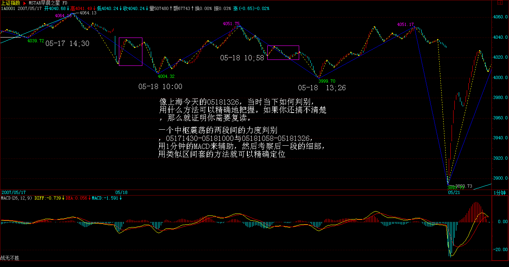
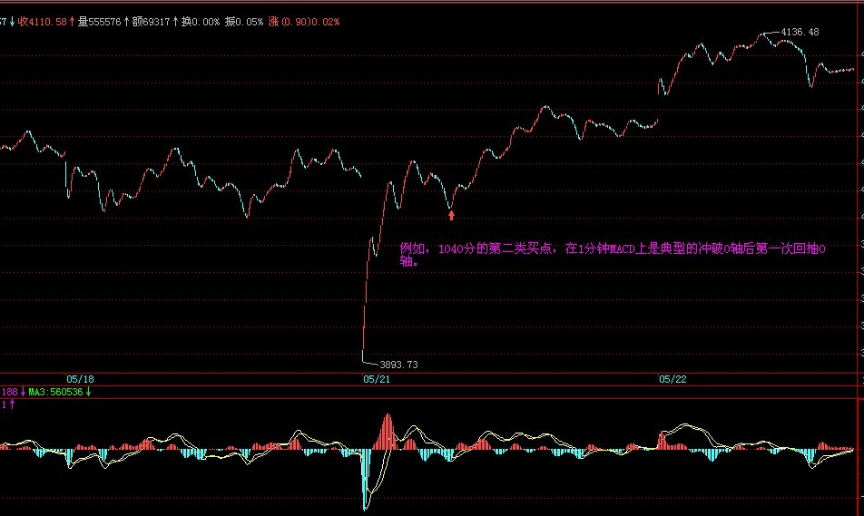
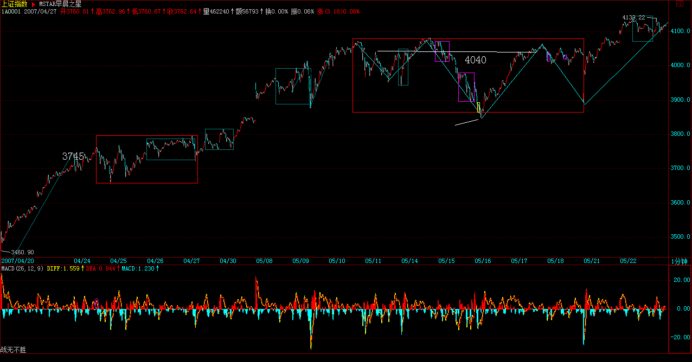
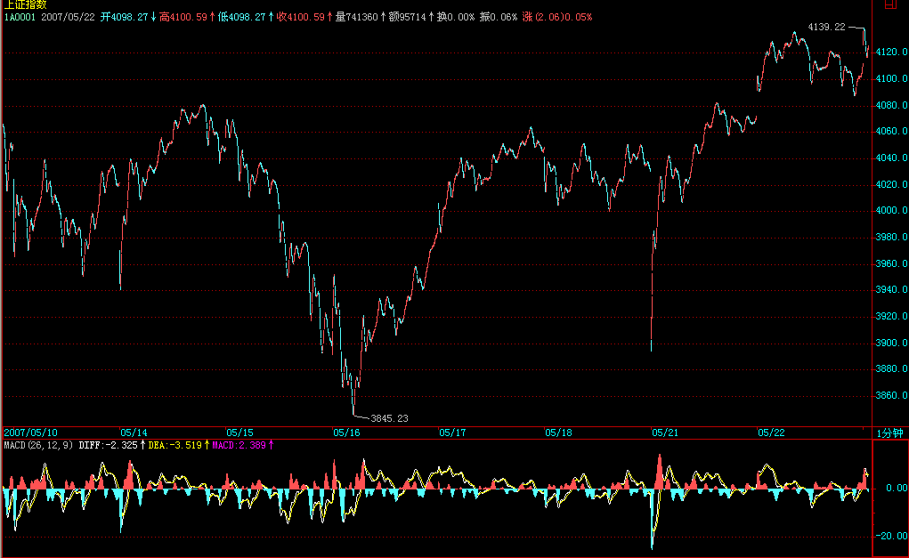
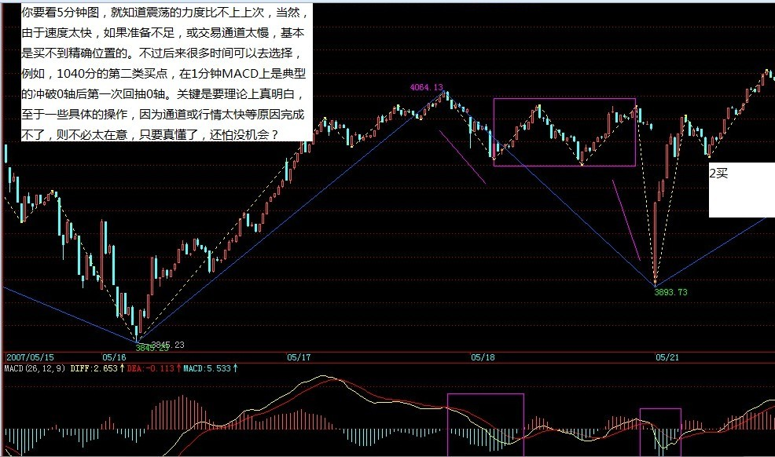
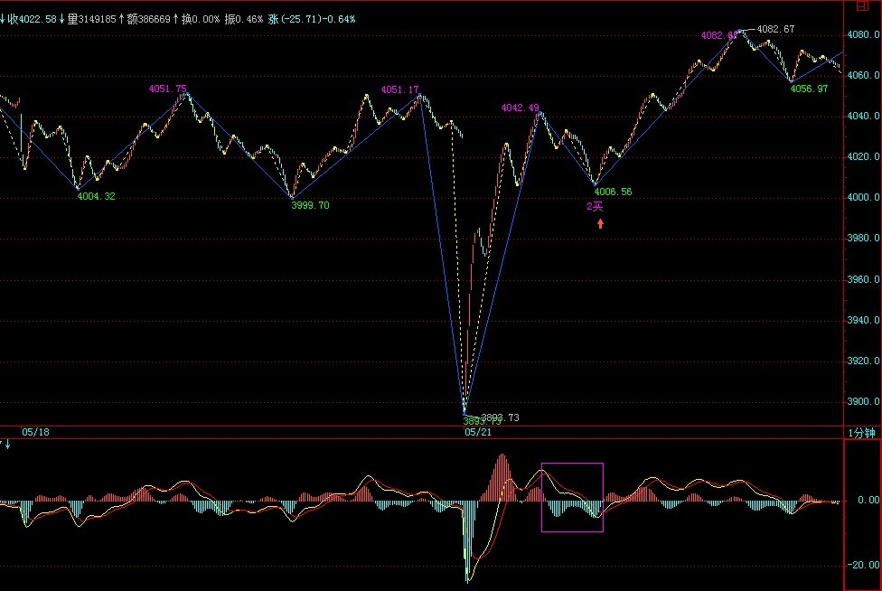

|
 |
教你炒股票52：炒股票就是真正的学佛
(2007-05-18 08:49:05)
本ID一直强调无须预测，并不是说市场走势就绝对不可预测，相反，市场走势当然可以绝对预测。不过，这里的预测和一般所说的预测并不是同一意义，一般的预测是建立在一个机械的、上帝式思维基础上，这种思维，把市场当成一个绝对的、不受参与者观察所干扰的系统，由此而行为一套所谓的预测标准，一个建立在错误的思维基础上的标准。这种预测，本来就不存在。关于这点，如果你对量子力学的历史发展有点了解，不难理解。
市场的预测、观察、参与者，恰好又是市场走势的构成者，这就是市场预测的最基本起点。因此，市场的走势模式，归根结底就是市场预测、观察、参与者行为模式的同构，这意味着，唯一并绝对可以预测的，就是市场走势的基本形态。不学无术之辈，喜欢谈论所谓的点位，却不知道，点位只是基本形态演化的一个结果，是当下中形成了，形态是“不患”的，点位是“不患”之“患”，只要把握了这“不患”，其“患”自然就在当下的把握中。那种追求对点位的非当下把握，绝对是脑子进水，因为点位都是当下形成中的，这是一个“不患”，企图逃离这个“不患”而谋其“患”，不是脑子进水是什么？正因为点位都是在基本形态的演变中当下形成的“不患”，才有点位的“不患”之“患”。
明白了这个道理，才算是有了市场预测的“正眼”，无此“正眼”，都是瞎掰。而实际操作中，最基础的，就是对基本形态的最基本把握，这是“不患”的，只有立足于这“不患”上，才有对点位之“患”当下的把握。说白了，所有的操作练习，归根结底就是在此之上。所以，本ID说自己只是一个训练者，引导者，因为当下，只能是你的当下，离开你的操作当下，根本是不存在的。由此，不难理解另外一个操作上的“不患”，就是你事先确立的操作级别，这是“不患”的。市场，归根结底只是你的市场，就像，一个看花只能看到花的眼睛，那自然看花就是花，不会把花看成猴子，科学的把戏，就是要先假设所有的被科学定义为眼睛的物体，都只能把花看成花，所以科学在股市上注定死无葬身之地。
所有的市场，都必然只能是你当下观察、操作中的市场，离开你当下的观察、操作，市场对于你来说并不存在，或者说毫无意义。而你的观察、操作，必须有一个“不患”的前提，就是你的操作级别。这操作级别，就等于一个把花看成花或把花看成猴子的眼睛，在你的世界里，把花看成花与把花看成猴子所包含的基本模式是同构的，关键是这个模式，而不是花还是猴子的不同设定。所以，本ID的理论里，可以适用于任何操作级别的人，因为不同级别之间的基本模式是同构的，这就是市场的一个基本特征。注意，这特征不是理所当然的，这个特征之所以存在，归根结底，就是市场参与者有着基本相同的结构，这结构，归根结底，就是贪嗔痴疑慢。甚至可以这样说，在六道轮回中，任何的类市场形态，本ID的理论都适用其中，因为，这贪嗔痴疑慢是同构的。所以，如果本ID这理论的种子种下后，就算你轮回到其它道上，那里恰好有一个股票市场，你也可以在其中如鱼得水。
那么，市场的基本形态是什么，最基础的，就是反复说的以中枢、级别为基础的趋势与盘整。而背驰的级别一定不小于转折的级别，是市场预测的最基础手段。例如，你是一个30分钟级别的操作者，那么，任何30分钟级别下跌及30分钟级别以上的盘整，你都没必要参与。因此，当一个30分钟的顶背驰出现后，你当然就要绝对退出，为什么？因为这个退出是在一个绝对的预测基础上的，就是后面必然是一个30分钟级别下跌或扩展成30分钟级别以上的盘整，这就是最有用、最绝对的预测，这才是真正的预测，这是被本ID的理论绝对保证的，或者说这是被市场参与者的贪嗔痴疑慢所绝对保证的。
本ID的理论，归根结底，就是研究这贪嗔痴疑慢的。由此也就知道，为什么市场的操作，归根结底就是人自身的比较，为什么本ID可以把理论大肆公开而不会影响本ID自己的操作，因为，只要这世界依然有这贪嗔痴疑慢，本ID就如鱼得水。有人整天痴谈学佛，其实，炒股票就是真正的学佛，不在这贪嗔痴疑慢的大烦恼中如鱼得水、得大自在，你那佛，顶屁用！
每日解盘：2007-05-18
今天，只有脑子都是水的人，才会觉得上海要新高。用脚指头思维都知道，周末消息面的压力会让走势在这里犹疑。今天的平衡市走势，无非就是对此的一种正常反应。技术上，管了指数已经N天的4040点依然站不住，当然，这只是为了对中枢不了解的人给出的点，如果熟悉正常分析，可以找到更精确的点。 大盘每天的走势都是本ID理论的最好注释，像上海今天的05181326，当时当下如何判别，用什么方法可以精确地把握。如果你还搞不清楚，那么就证明你需要复读。答案很简单，一个中枢震荡的两段间的力度判别，05171430-05181000与05181058-05181326，用1分钟的MACD来辅助，然后考察后一段的细部，用类似区间套的方法就可以精确定位。注意，这一切都可以当下完成的，无须事后解释。如果上述方法你一无所知或根本搞不清楚，那放假两天继续补课。


加息，中国经济不能承受之轻
(2007-05-21 08:43:51)
今天的走势，在技术上十分规范，早上先冲到最近反复强调的4040上，然后回调，并在第四根30分钟K线突破向上，并在下午确认4050上下单边区间的有效性。明天的走势就很简单了，如果这单边区间不被跌破，大盘将继续向上拓展区间，否则就再次陷入原中枢的延伸震荡中。
本ID反复强调，关于1/2线大震荡的三种具体形式在形成、选择中，这是市场各种力量合力的结果，不管是管理层还是所谓的经济雪茄，以及市场参与者，并没有一方有绝对的力量，因此才构成最终具体的形式。对此必须有最清醒的认识，而最理想的方式，就是在充分的震荡中，不断让市场统一在本ID所指出的方向上来。管理层恐高，也应该给他们以适应的时间，因此还是本ID5月份后常说的那句话，反左反右，对空头与多头里的极端分子采取强硬措施，更要在市场中让他们左右挨巴掌。当然，震荡的区间可以加大，并不是说一定要限制在目前的区间中。但用震荡消化市场、政策压力的本ID剧本，必须成为市场的共识，否则就让市场对极端分子进行强行教育。
在这种震荡中，充分利用本ID的理论来操作，是一个最好的选择。当然，如果你技术不过关，那就看5周均线，甚至10周均线，从去年8月以来，后者就从未被跌破过，看这足够在各种大震荡中心理减震了。
对于短线，看不明白用不好本ID理论的，可以看5日均线，这两天关键看这5日与10日之吻能否再次女上位。个股方面没什么可说的，还是那句话，大盘震荡，有些股票反而会大幅上涨，前面说的这句话依然有效。具体板块，本ID去年底说的医药，今年最牛的几只股票里，002019、000416等，显然都是这个板块的；还有钢铁，最近可以关注有关中小公司整体上市的，具体的本ID知道，但不好说出来，免得被监管，其中有一地方本ID好象曾419过。至于军工、公用等等，都会继续表现的，你看本ID16只股票里相应的都知道了。还有就是上月反复强调的故意亏损的那些，例如本ID就知道某故意亏损还星号ST、代码还是等比数列的其实后面就有两个铜矿装进去，这种把戏，如果有可能就去挖掘。
每日解盘（2007-05-22
15:28:48）
昨天说了，只要不跌破4050的昨天单边区间，大盘就继续向上拓展。今天的大盘走得太技术了，全天基本就在磨那条最重要的1/2压力线，早上先冲到4129这线的位置上，然后在上面来一个小多头陷阱，然后一路下来考验缺口支持，尾盘再拉回，是否感觉到其中的美感？明天，依然是该线与今天缺口间的震荡活动，然后再选择短线突破的方向，具体可参照今天开始形成小中枢的震荡与第三类买卖点选择。


大方面看，关于该1/2的震荡形式，依然继续选择中，虽然今天是历史上第一次突破过该1/2，但并不能绝对地否定第一种震荡形式的可能。当然，操作上并不需要预测，只需要看好短线的突破方向，看不懂的，就是5、10日线，不破就拿着，连短线的震荡都无须考虑。技术好的，可以继续用短线背驰做震荡，但一定要针对具体个股来，大盘只要平稳，个股行情将不断。
教你炒股票52：回复（一）
缠中说禅：
2007-05-18
15:41:09
[匿名] 糊涂虫 问题是：在一个３０分种的Ｋ线图上出现一个出现一个时间跨度为３天或者８天的中枢（２４＼６４根Ｋ线）和一个时间跨度为１天或者３个小时中枢（８／６根Ｋ线），请问这两个中枢的＂级别＂是一样的？在某一级别的Ｋ线图上，其中枢的级别是否由中枢形成的时间决定的？
谢谢老师和师兄＼师姐们
--
中枢是用递归方法定义的，先要把这个理解清楚，否则你说的中枢和本ID说的都不是一样东西，怎么可能理解？
缠中说禅：
2007-05-18
15:45:18
[匿名] 冠军杯
2007-05-18 15:32:48
缠MM 你好，我提过N次问题都没回答哦，今天想问下 000800，000063 的情况怎么样？ 063 被套了，谢谢
=
这两股票中线都问题不大，被套肯定是因为在震荡区间中追高买了，可以好好学学震荡区间操作的要领。
缠中说禅：
2007-05-18 15:47:39
[匿名] 墨香小老虎
2007-05-18 15:35:32
两只老虎
2007-05-18 15:14:59
今天操作也很郁闷！
扔了999 1/4，想回补结果错过机会。
补了一天的998，结果998萎靡了一天
==
我今天老老实实的,反倒收益新高.
唉.郁闷.还是技术不行啊.
=
应该把做错的原因找出来，每一个都不能放过，这样才能磨练出精确度。否则，看均线就可以了，那还简单。
缠中说禅：
2007-05-18
15:48:55
匿名] 启程
2007-05-18 15:46:28
楼主。我想问个问题。000911由于3月中的停牌。造成4月初复牌后的两个涨停牌。月线图上就留了一个大缺口。现在股价一直在震荡。难道这样的缺口一定要补吗？望批示！
谢谢罗～～
==
谁说缺口一定要补的？像突破性的缺口，就不补。像上海，94年在300多点还留着一个呢。
缠中说禅：
2007-05-18
15:54:57
匿名] christine
2007-05-18 15:52:13
缠中说禅：
2007-05-18
15:57:36
[匿名] 新浪网友 相应速率的测算上，是否也可以应用到个股上？谢谢。
=
可以，但比例关系不一定一样。本ID有时间可以分析个股来看，当然，只能是有足够时间的交易时间的老股了。
缠中说禅：
2007-05-18
16:01:07
[匿名] 夜雨
2007-05-18 15:56:54
美女姐姐，我这两天老是卖最强势的股，减仓600597，昨天卖点卖出600203，买的都还在盘整，象600203我昨天卖了，今天这么位，怎么才能把握啊，还有600203今年的涨幅也跟416差不多，这两支，有的比，有什么可以八卦一下吗？
--
不熟练的，可以把级别放大点，别1分钟都没背驰就急于操作，甚至可以规定自己，那种5日线都不跌破的调整，可以不管的。另外，卖了是为了买回来，特别对那些大级别在强劲上升的股票，否则，卖了不买，那为什么要卖？
至于203，和416比不上吧，一个300%多，一个500%多了。
缠中说禅：
2007-05-18
16:04:45
匿名] 钢铁大道
2007-05-18 15:58:35 ==
明显的思维矛盾，既然你是看好大级别的，就要按大级别的图形来思维，而不用管小级别的事情。如果你只能忍受小级别的波动，就按小级别操作，不能大小级别搞乱了。
缠中说禅：
2007-05-18
16:07:24
果二
缠中说禅：
2007-05-18
16:10:07
[匿名] 漂泊
缠中说禅：
2007-05-18
16:12:51
[匿名] 大盘
缠中说禅：
2007-05-18
16:16:38
[匿名] joyce
==
如果你学理科的，应该不难搞懂中枢的递归定义。如果你学文科或者艺术的，需要直观才能明白定义的，这里有网友把中枢定义画了图，你可以问他们的网址去看。本ID有一帖子上有那地址，本ID现在也不知道是哪个帖子了，如果可能去找一下也可以。
缠中说禅：
2007-05-21
15:50:43 [举报]
[匿名] 飞 请问：1.这个扩张的中枢是否发生重叠后就完成了？
2.这个扩张后的中枢如果完成或没完成那他的次级别走势的三段该如何算起？如何区分？ 你这样说不够严谨。中枢扩展不能预先说是某级别的，因为扩展可以不断延续下去。这个问题其实很简单，如果你明白连接的可结合性，就更简单了，其实就是A+B+C=（A+B+C），而后者符合更大的中枢定义，所以就可以说A扩展了，并没有什么高深的地方。
缠中说禅：
2007-05-21
16:02:49 [举报]
[匿名] 半路学禅
2007-05-21 15:45:50
有一个问题想问一下禅主：因为技术不是很过关，所以鸡蛋放在3、4个篮子里，每天开盘后不停的轮换分析，操作多些时，还编个Excel表格算差价，这样下来，每天精神耗费大，而且还不是每次都能买卖正确且打到差价上。想想禅主每天至少十几支股票的操作，而且还是大资金，都能应付自如，做到游刃有余，真是佩服！！！想问一下，禅主的操作法诀是什么？？？？？？
==
这个问题很简单，本ID只需要告诉指令，具体敲键盘这种活本ID是不干的。所以本ID反复说，资金小的一定要集中，一般散户，2、3只就足够了。
缠中说禅：
2007-05-21
16:08:34 [举报]
[匿名] 新浪网友
2007-05-21 15:59:46
博主.能不能说说早盘的反弹.在1F钟图上不是很好把握啊
--
你要看5分钟图，就知道震荡的力度比不上上次，当然，由于速度太快，如果准备不足，或交易通道太慢，基本是买不到精确位置的。不过后来很多时间可以去选择，例如，1040分的第二类买点，在1分钟MACD上是典型的冲破0轴后第一次回抽0轴。关键是要理论上真明白，至于一些具体的操作，因为通道或行情太快等原因完成不了，则不必太在意，只要真懂了，还怕没机会？


2007-05-21
16:11:25 [举报]
[匿名] 首钢股份
缠中说禅：
2007-05-21
16:22:05 [举报]
[匿名] 哈哈
教你炒股票52:回复（二）
(2010-08-12
19:30:36)
缠中说禅：
2007-05-21
16:27:11 [举报]
匿名] 缠途漫漫 ＝＝＝＝
缠中说禅：
2007-05-21
16:36:04 [举报]
[匿名] 短路
缠中说禅：
2007-05-22
08:49:55 [举报]
各位请注意，本ID昨天说的股票只是举例子，由于有些盘子太小，例如本ID就在摆弄着一只和那锌锗内容一样的股票，但盘子确实太小，根本就没法说，一说就乱。现在不是2000点了，任何股票都要首先注意风险，必须按照大级别的买点进入。盘子小的，不能乱买，否则盘子就乱，就要洗。各位最好就是按思路去买股票，最好就是继续持有原来已经获利丰厚而依然有大潜力的股票，这样可以减少震荡的风险，否则一窝蜂地去换股票，那就乱套了。注意，来这里是学技术的，有技术，操作什么股票都可以，没必要养成听消息的坏习惯。如果说消息，本ID这里绝对是全中国最大的消息集散地，但本ID不愿意说，就是怕害了各位，养成坏习惯。解盘收盘后附录上，先下，再见。
缠中说禅：
2007-05-22
15:28:48 [举报]
昨天说了，只要不跌破4050的昨天单边区间，大盘就继续向上拓展。今天的大盘走得太技术了，全天基本就在磨那条最重要的1/2压力线，早上先冲到4129这线的位置上，然后在上面来一个小多头陷阱，然后一路下来考验缺口支持，尾盘再拉回，是否感觉到其中的美感？明天，依然是该线与今天缺口间的震荡活动，然后再选择短线突破的方向，具体可参照今天开始形成小中枢的震荡与第三类买卖点选择。大方面看，关于该1/2的震荡形式，依然继续选择中，虽然今天是历史上第一次突破过该1/2，但并不能绝对地否定第一种震荡形式的可能。当然，操作上并不需要预测，只需要看好短线的突破方向，看不懂的，就是5、10日线，不破就拿着，连短线的震荡都无须考虑。技术好的，可以继续用短线背驰做震荡，但一定要针对具体个股来，大盘只要平稳，个股行情将不断。至于个股，本ID真不能说任何东西了，反正昨天本ID也没说什么，只是说了几句梦话，如果因为本ID的几句梦话，大家明白了点什么，那是大家的够狡猾，和本ID可无关。这种梦话，估计最变态的管理层也不能对本ID发飙，本ID说而不说，不说而说，想抓本ID的把柄，可需要证据。
缠中说禅：
2007-05-22
15:44:06 [举报]
[匿名] stone
缠中说禅：
2007-05-22
15:45:26 [举报]
[匿名] 新浪网友
缠中说禅：
2007-05-22
15:51:26 [举报]
[匿名] 小迷糊
缠中说禅：
2007-05-22
15:58:20 [举报]
[匿名] 我
缠中说禅：
2007-05-22
16:00:35 [举报]
[匿名] 走失的爱犬
缠中说禅：
2007-05-22
16:16:50 [举报]
[匿名] 新浪网友
缠中说禅：
2007-05-22
16:19:32 [举报]
[匿名] JESSIE
缠中说禅：
2007-05-22
16:30:17 [举报]
[匿名] 新浪网友
缠中说禅：
2007-05-22
16:33:11 [举报]
[匿名] 新浪网友
缠中说禅：
2007-05-22
16:35:58 [举报]
[匿名] 新浪网友 ===========
缠中说禅：
2007-05-22
16:56:07 [举报]
[匿名] 新浪网友
缠中说禅：
2007-05-22
17:04:18 [举报]
[匿名] 中间体
缠中说禅：
2007-05-22
17:06:22 [举报]
[匿名] 新股手
缠中说禅：
7NT ==
对不起，本ID回答问题是顺着看，可以前面的问题会漏掉。
第二类买点的定义很明确，就是例如一个30分钟的第一类买点，一个5分钟次级别上去后，一个5分钟回试不破低点，那就是第二类买点，你说他该在哪一段？用结合进行次级别分解，只能在第二段。
缠中说禅：
2007-05-22
17:14:24 [举报]
[匿名] 墨香小老虎
缠中说禅：
2007-05-22
17:19:23 [举报]
[匿名] 路漫漫
缠中说禅：
2007-05-22
17:23:17 [举报]
[匿名] 白玉兰
缠中说禅：
2007-05-22
17:27:08 [举报]
[匿名] 夜雨
缠中说禅：
2007-05-22
17:40:54 [举报]
[匿名] 乐土 |
|
|
|